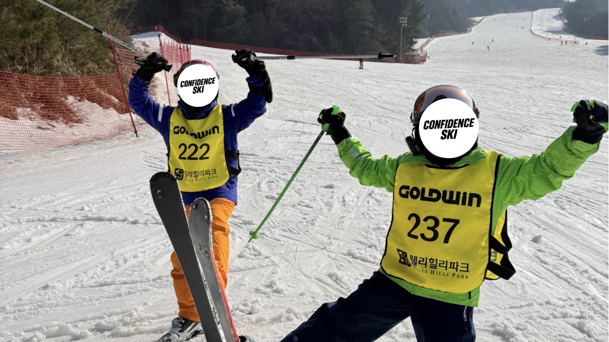
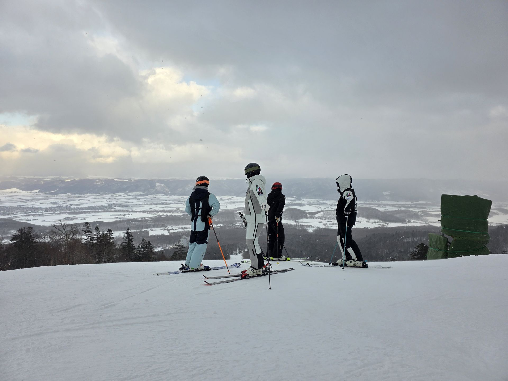

개장부터
아이의 첫눈을 맞이하는 곳
개장 — 2월 중순
강촌 · 지산

개장부터 늦겨울까지. 시기에 따라 만나는 설원이 달라집니다.
시즌 운영 흐름
강촌·지산에서 시작해 용평·하이원·웰리힐리로, 시즌 끝에는 삿포로 일본 캠프로 이어지는 운영 흐름입니다. 세부 일정과 참여 가능 여부는 상담 시 확인해 주세요.
개장 — 2월 중순
강촌 · 지산
2월 중순 — 2월 말
용평 · 하이원 · 웰리힐리

2월 말 — 3월 초
삿포로 일본 캠프
